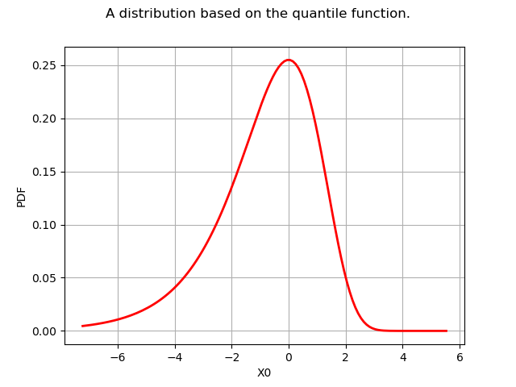

Note
Click here to download the full example code
Create your own distribution given its quantile function¶
We want to create a distribution which cumulated distribution (cdf) is denoted by  when the quantile function is known. In order to implement this, we use the CompositeDistribution class.
when the quantile function is known. In order to implement this, we use the CompositeDistribution class.
#
# We know that the random variable :math:`X` is distributed according to :math:`F` if and only if :math:`U=F(X)` is distributed according to the uniform distribution in the :math:`[0,1]` interval, i.e. :math:`U=F(X) \sim \mathcal{U}(0,1)`. Hence, if :math:`U \sim \mathcal{U}(0,1)` then :math:`X=F^{-1}(U)` is distributed according to :math:`F`.
#
# In this example, we want to create a distribution which cdf :math:`F: \mathbb{R} \rightarrow [0,1] ` writes, with :math:`\rho > 1`:
#
# .. math::
# F(x) = 1-e^{-\rho^x} \quad \forall x \in \mathbb{R}.
#
#
# The quantile function is :math:`F^{-1} : u \rightarrow [0,1]` and writes:
#
# .. math::
# F^{-1}(u) = \dfrac{\log \left[ - \log (1-u) \right] }{\log(\rho)} \quad \forall u \in [0,1]
#
#
# Since :math:`U \sim \mathcal{U}(0,1)`, then :math:`(1-U)\sim\mathcal{U}(0,1)`. This is why we can simplify the expression and define the function :math:`G` such as:
#
# .. math::
# G(u) = \dfrac{\log \left[ - \log u \right] }{\log(\rho)} \quad \forall u \in [0,1].
#
#
# Then :math:`G(U)` is distributed according to the :math:`F` distribution.
First, we import the useful librairies and we create the symbolic function  .
.
import openturns as ot
from openturns.viewer import View
Then, we create the function with . To do this, we create a function which takes both  and
and  as inputs and returns . Then the g function is defined as a ParametricFunction with a fixed value of .
as inputs and returns . Then the g function is defined as a ParametricFunction with a fixed value of .
gWithParameter = ot.SymbolicFunction(["u", "rho"], ["log(-log(u)) / log(rho)"])
rho = 2.0
g = ot.ParametricFunction(gWithParameter, [1], [rho])
We define the distribution distF as the image through of the Uniform(0,1) distribution:
distF = ot.CompositeDistribution(g, ot.Uniform(0.0, 1.0))
Now, we can draw its pdf, cdf, sample it,…
g = distF.drawPDF()
g.setTitle("A distribution based on the quantile function.")
g.setLegendPosition("")
view = View(g)
view.ShowAll()

Total running time of the script: ( 0 minutes 0.090 seconds)